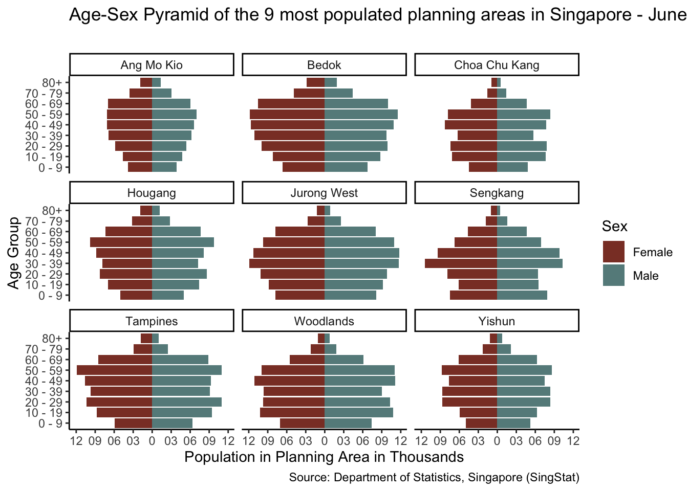
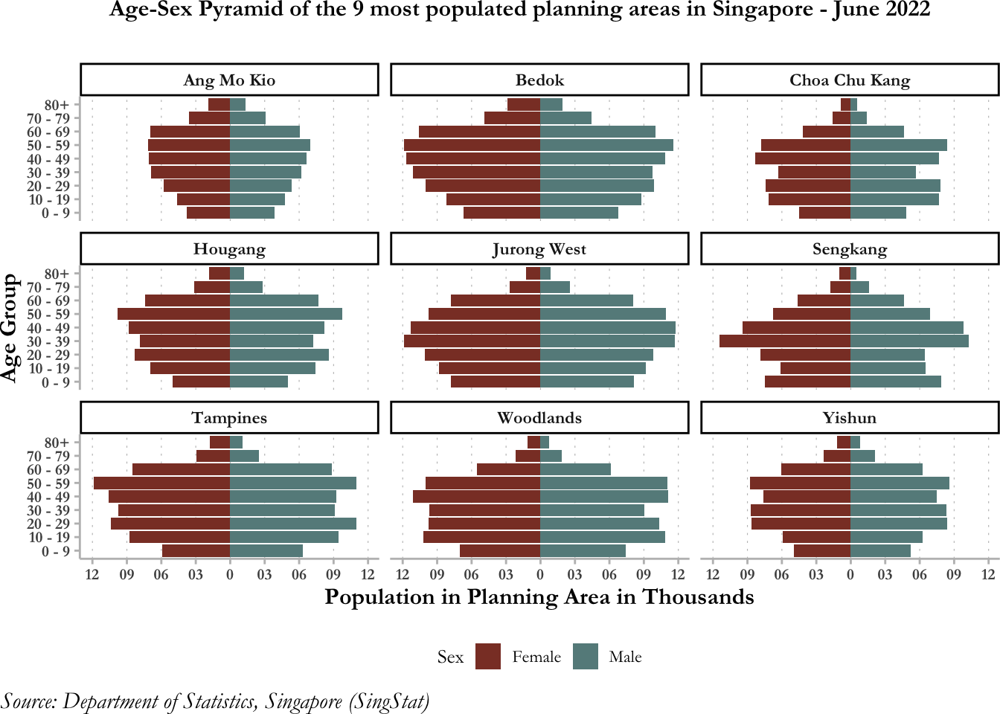

pacman::p_load(tidyverse, patchwork,
ggthemes, hrbrthemes,
ggrepel, RColorBrewer, gridExtra)Take-Home_Ex02
1. The Task
The task is to critique the Take-Home exercise 1 of any of one our peers in terms of what could have been improved with respect to clarity and aesthetics to make it a compelling visual graph. The alternate proposed graph needs to be sketched using the visualisation data design principles and industry best practices. the graph needs to be reproduced in R using ggplot2 and tidyverse packages.
2. Critique
Take-Home Exercise 1 required us to create an age-sex pyramid for nine planning areas in Singapore. While my peer did deliver on the task asked, there are some areas of improvement that would have made their chart clear, readable and more visually appealing!

2.1 Clarity
2.1.1 Lack of Details in Title
The title for the overview chart is ‘Population Structure in 9 planning areas in SG(June 2022)’, which in itself provides details on location, time and data. However, there is an omission of context on why those planning areas are selected in the overview graph title. The term ‘population structure’ is a vague description, mentioning age-sex pyramid would have been more prudent. The same issue is echoed for the detailed chart.
2.1.2 Missing Data Source
The dashboard does not link the data source reducing the credibility of the dashboard figures.
2.1.3 Varied Axes in the Detailed Chart
For the detailed chart, the author has displayed nine different age-sex pyramid charts put together in the dashboard, as opposed to using one chart showcasing all the chosen nine planning areas. This is an issue because the axes for all these planning areas are not uniform. For instance, when we zoom into ‘Novena’ and ‘Changi’ in the ‘Detailed population structure in Each Area’, we observe that the female population aged 90 and above appear to have a similar population count. However, when we hover over those points, it reveals that the population count in ‘Changi’ is 10 whereas it 310 for ‘Novena.’
2.1.4 Too many groups in Age Group
The age bands for the grouping is 5 years which results in nineteen different groups. This is a lot of information for the brain to process together, the chart would be more readable if the age groups were reduced.
2.2 Aesthetics
2.2.1 Loss of Space using Redundant Overview chart
The overview chart is conveying the same information as the detailed chart, with uniform axes for all nine planning areas, however it is displayed side by side as opposed to the 3X3 panel structure in the detailed chart. The panel area allocated to the overview chart is small, making it challenging for the audience to view and grasp information. For instance, look at ‘Changi’ in planning area, one can barely see the bars. The overview chart occupies space that could have been better used for the detailed chart, rendering it redundant.
2.2.2 Unnecessary legend, filter and slide option
The axes are clearly labelled for ‘male population’ and ‘female population’ therefore there is no need for the legend as it wastes space. Additionally, the filter is for the overview chart, adding more planning areas would reduce the already hampered visibility of the overview chart, therefore its an unnecessary addition. The slider has no functionality in this chart and should be removed.
2.2.3 Overlapping & Incomplete labels an in Overview Chart
The age group axis has age groups that are overlapping, thereby impeding graph readability. Additionally, the ‘female population’ axis label is not appearing completely in view, which makes the graph look untidy.
2.2.4 Missing Age Group Axis label
‘Age’ as a label has been mentioned only in ‘Ang Mo Kio’. The label has a small font, which can be overlooked by the audience. While, the audience is smart enough to gauge that the groups on the Y axis is ‘Age Groups’, it would be better to add it in as it makes the graph look more complete.
2.2.5 Incorrect Layout for the Dashboard View
The dashboard layout is not set to ‘Automatic’, therefore even in ‘Full View’ option in ‘Tableau Public’, one needs to scroll, which is a hassle for the viewer. The audience can better understand the graph if it appears in the same window.
3. Proposed Design

Improvements:
a) The planning areas will be selected on the basis of the top 9 most populated planning areas in Singapore. This criterion is picked as the original graph lacks context on the area selection. The selection criteria will be updated in the graph title to make the graph more comprehensive.
b) The age groups will be further grouped with gaps of 10 years as opposed to the original 5 years. The age label will be incorporated as well.
c) The data source is added in the graph.
d) Change in Aesthetics: age group label is clearly stated, there are no overlapping labels, legend is placed below to increase the space for the panel chart to enhance graph readability.
4. Execution in R
4.1 To start with R, we need to load the requisite packages to enable data manipulation, wrangling and visualisation.
4.2 To get started, we load the dataset into RStudio using ‘read_csv’. This is preferred over ‘read.csv’ because it takes into account the space in variable names. The dataset has 4 character variables - ‘Sex’, ‘Planning Area’, ‘Age Group’, ‘Pop_Proportion’ and one numerical variable - ‘Population’.
data <- read_csv('data/AgeSexPop.csv')Rows: 1980 Columns: 5
── Column specification ────────────────────────────────────────────────────────
Delimiter: ","
chr (4): Sex, Planning Area, Age Group, Pop_Proportion
dbl (1): Population
ℹ Use `spec()` to retrieve the full column specification for this data.
ℹ Specify the column types or set `show_col_types = FALSE` to quiet this message.4.3 There are 19 age groups provided in the dataset, for our graph, we will reduce the number of age bands by increasing the range from 5 years to 10 years for the age group.
data$Age_groups <- with(data, dplyr::case_when(`Age Group` %in% c("0 - 4", "5 - 9") ~ '0 - 9',
`Age Group` %in% c("10 - 14", "15 - 19") ~ '10 - 19',
`Age Group` %in% c("20 - 24", "25 - 29") ~ '20 - 29',
`Age Group` %in% c("30 - 34", "35 - 39") ~ '30 - 39',
`Age Group` %in% c("40 - 44", "45 - 49") ~ '40 - 49',
`Age Group` %in% c("50 - 54", "55 - 59") ~ '50 - 59',
`Age Group` %in% c("60 - 64", "65 - 69") ~ '60 - 69',
`Age Group` %in% c("70 - 74", "75 - 79") ~ '70 - 79',
`Age Group` %in% c("80 - 84", "85 & Over") ~ '80+'))4.4 We are plotting the nine most populated planning areas in Singapore. To find the sum, we use the tidyverse package to group the data by planning area, then summing the population in a new variable ‘sum_pop’ and finally arranging it in descending order and slicing it to get the top 9 populated areas.
data_PlanningArea <- data %>%
group_by(`Planning Area`) %>%
summarise(sum_pop = sum(Population), .groups = 'drop') %>%
arrange(sum_pop,.by_group = TRUE) %>%
top_n(9)Selecting by sum_popdata_PlanningArea# A tibble: 9 × 2
`Planning Area` sum_pop
<chr> <dbl>
1 Choa Chu Kang 174430
2 Ang Mo Kio 174920
3 Yishun 202060
4 Sengkang 206730
5 Hougang 222450
6 Woodlands 250270
7 Tampines 261300
8 Jurong West 272810
9 Bedok 289850top9_PA <- data %>% filter(`Planning Area` %in% c("Choa Chu Kang", "Ang Mo Kio", "Yishun", "Sengkang", "Hougang", "Woodlands", "Tampines", "Jurong West","Bedok"))4.5 Finally, we use ggplot to create the proposed visualisation
plot_PA <- ggplot(data = top9_PA, aes(x = Age_groups, y = Population, fill = Sex)) +
geom_bar(data = top9_PA %>% filter(Sex == "Male"),
stat = "identity",
position = "identity") +
geom_bar(data = top9_PA %>% filter(Sex == "Female"),
stat = "identity",
position = "identity",
mapping = aes(y = -(Population))) +
scale_fill_manual(values=c("coral4", "paleturquoise4")) +
labs ( x = "Age Group", y = "Population in Planning Area in Thousands", title = "Age-Sex Pyramid of the 9 most populated planning areas in Singapore - June 2022", subtitle = " ", caption = "Source: Department of Statistics, Singapore (SingStat)") +
scale_y_continuous(breaks = seq(-15000,15000,3000), labels = c("15", "12", "09", "06", "03", "0", "03", "06", "09", "12", "15")) +
coord_flip() +
theme_classic() +
facet_wrap(~`Planning Area`, ncol = 3)
plot_PA
#just for fonts, size, placements
plot_PA +
theme(text = element_text(family = "Garamond"),
plot.margin = margin(t=0.1, r=0.1, b=0.1, l=0.1),
plot.title = element_text(hjust = 0.3, face = "bold", size = 12),
plot.caption = element_text(hjust = 0, face = "italic", size = 12),
plot.caption.position = 'plot',
panel.grid.major.x = element_line(colour = 'grey', linewidth = 0.2, linetype = "dotted"),
panel.grid.major.y = element_blank(),
panel.grid.minor.x = element_blank(),
panel.grid.minor.y = element_blank(),
axis.text = element_text(size = 8, face = "bold"),
axis.line = element_line(color = 'grey'),
axis.ticks = element_line(color = 'grey'),
axis.title = element_text(face = "bold", size = 12),
legend.title = element_text(size = 10),
legend.key.size = unit(5, "mm"),
legend.position = "bottom") +
theme(strip.text = element_text(size = 9, face = "bold"))
5. Learning from this Exercise
5.1 My peer’s design gave me an opportunity to reflect on my take home exercise 1. There were minute details lacking which if incorporated would have enhanced my graph design.
5.2 It enabled me to dedicate more time to using tidyverse and ggplot packages. Initially, I would have to ‘’google’ how to improve aesthetics in RStudio, but with the resources provided, I was able to identify which command enabled which function, for instance I would have to refer to ‘plot.title’ for making changes to the title, panel.grid for making changes with the grid.
5.3 I learnt how making small changes such as providing context, correct labeling and positioning can have a considerable impact on the overall graph clarity and aethetics.